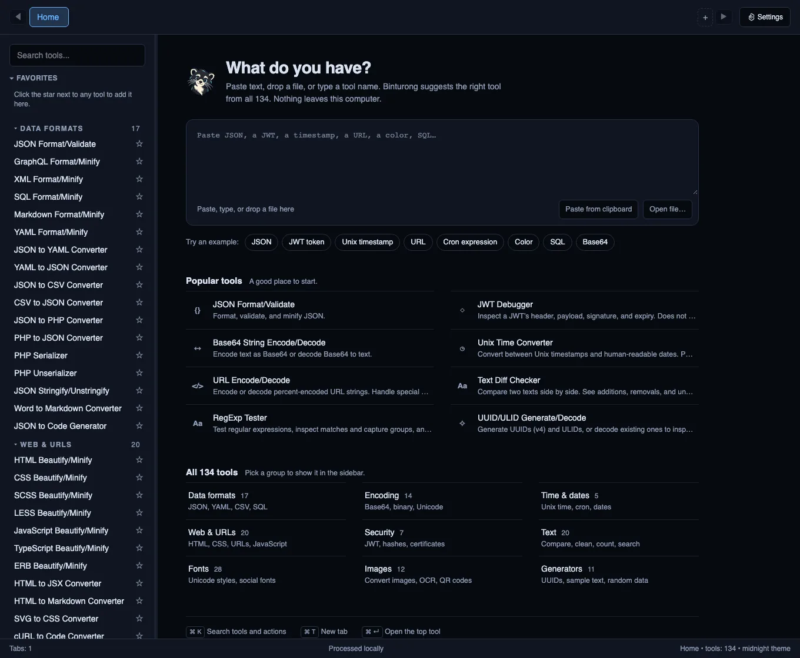
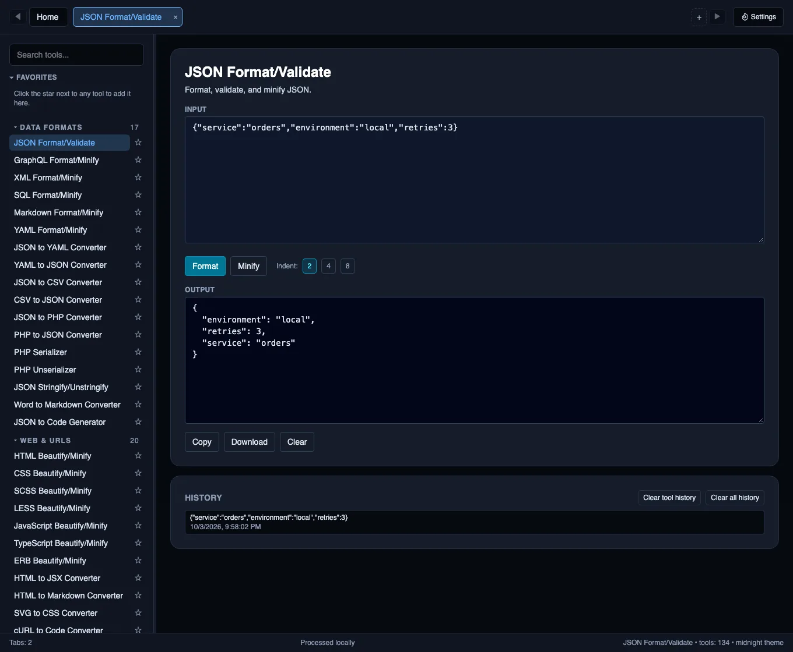
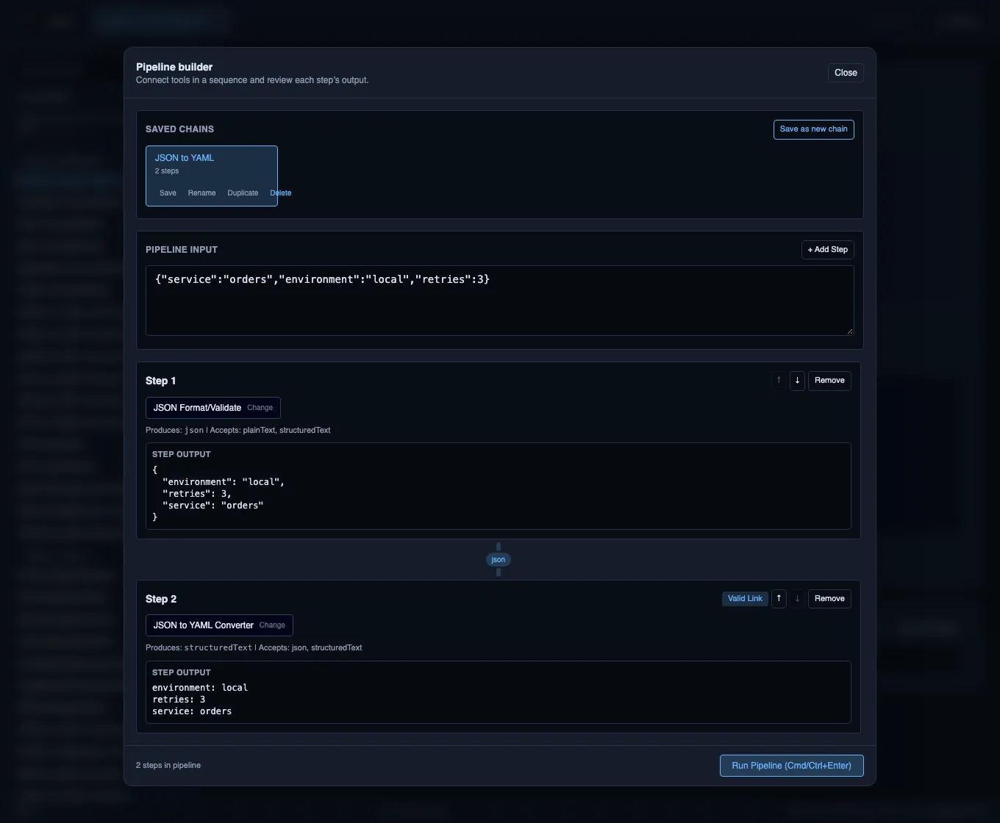
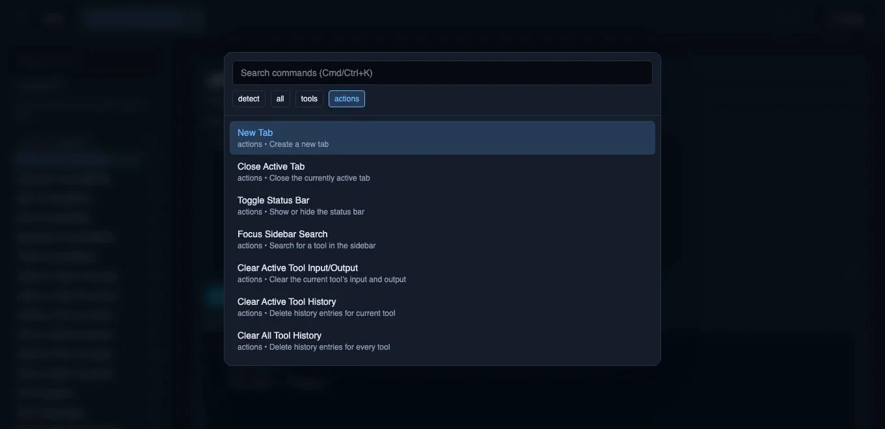

Binturong
Everyday developer tools, together on your desktop. Format code, convert data, and reuse a sequence of tools. Tool processing happens on your computer.
Screenshots


(open full size)

(open full size)

(open full size)

(open full size)Download Binturong
Get the latest release for macOS, Windows, or Linux. Binturong is free and open source under the MIT License. The current release is 0.1.4, from October 18, 2026.
- macOS, Apple Silicon and Intel: choose
Binturong_0.1.4_macos-universal.zip. Extract it, open the included DMG, drag the app to Applications, and eject the DMG. A separate universal DMG is also available. - Windows x64: choose
Binturong_0.1.4_x64-setup.exe. An MSI is available if you prefer it. To use Binturong without installing it, downloadBinturong_0.1.4_windows-x64-portable.zipand extract the whole ZIP. - Linux x86_64: choose the
.debfor Debian or Ubuntu, the.rpmfor Fedora, or the.AppImage. Make the AppImage executable before you run it; it may need FUSE 2 support. Linux packages are built on Ubuntu 22.04, so check your distribution's requirements.
Homebrew is available:
brew install --cask alsatianco/tap/binturongMac builds are ad-hoc signed and not notarized, so macOS may block the first launch. Windows installers have no publisher signature and may show an unknown-publisher warning. The installation guide explains the current Mac quarantine workaround. Package-manager distribution does not replace publisher signing.
Each release includes a SHA256SUMS file, so you can check your download. Updates are not automatic: install a newer release, or update through the Homebrew tap. Winget, Snap, and Flatpak files are templates and are not published yet.
Try one useful workflow
Try this synthetic JSON input:
{"service":"orders","environment":"local","retries":3}- Open JSON Format/Validate and format an API response or configuration object.
- Press Cmd/Ctrl+K, choose actions, and open Pipeline Builder.
- Add JSON Format/Validate followed by JSON to YAML Converter.
- Run the pipeline, inspect each output, and save the chain for reuse.
The demo uses synthetic order-service data. Saved chains keep their input. Pipeline formatter steps currently use Format with two-space indentation; per-step decoding direction and configuration controls are not available yet. Read the pipeline instructions.
Everyday tools in one workspace
- Format JSON, YAML, SQL, HTML, CSS, JavaScript, and other code.
- Convert JSON, YAML, CSV, encoded text, dates, and common data formats.
- Decode JWT headers and payloads. JWT decoding does not verify a signature.
- Work with text, hashes, images, and OCR. OCR requires Tesseract.
- Find tools with search and the command palette; keep tabs, favorites, and recent tools.
- Reuse compatible pipelines, and batch-process tools that show Batch controls.
- Run shared formatter and converter operations with the bundled CLI, using stdin or files.
The v0.1.3 registry contains 134 tools. The registry and binturong-cli list own the inventory; each tool's interface and input formats decide which operations are available. Browse tool examples, settings, and CLI commands.
Privacy and data retention
Tool processing happens locally. The app has no analytics or telemetry integration and no automatic update checks. Installing Tesseract and downloading OCR languages need network access. External project and download links open in your browser.
The app stores settings, favorites, recents, presets, saved chains, and tool history in a local SQLite database. Tool history can keep up to 20 input/output pairs per tool, with no timed expiry. Remember last input does not turn off history. Clear tool history or Clear all history removes recorded runs; deleting a saved chain removes its saved input.
Detection analyzes text you enter. The current interface does not continuously monitor your clipboard or keep clipboard history. Copying output places it on the system clipboard.
Find the database location in Settings, then Diagnostics. The SQLite database is not encrypted by the app. Clearing records does not promise forensic erasure from storage or backups. The portable Windows ZIP uses the same settings and saved data in your Windows user profile as an installed copy; they do not travel with the extracted folder.
Contribute or report a problem
When you report a bug, include the app version, operating system, steps, synthetic input, and expected result. Binturong is built with Tauri, Rust, React, and TypeScript. Contributions that improve real workflows and installation are welcome.
If Binturong saves you time, a GitHub star helps other developers find it.